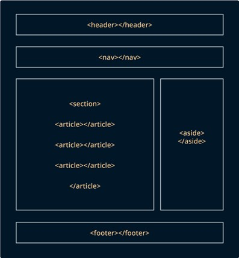
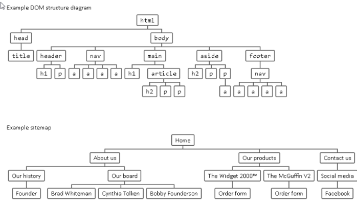
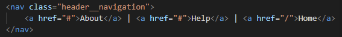
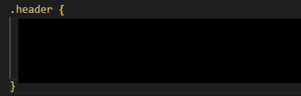
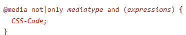
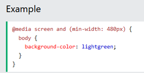
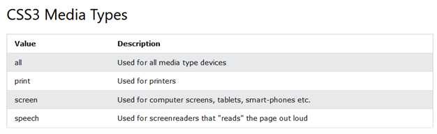

Laborhilfe Aufgabe_1
TEIL A – HTML
https://developer.mozilla.org/en-US/docs/Web/HTML/Element/input


Head Metadaten
- meta charset = „UTF-8": Kodierung in UTF-8 Characters
- meta name = „viewport": Display-Information, Display-Größe vom Gerät
- meta content = „content": Enthält Wert vom Element gekennzeichnet durch „name"
- title: Beschreibung im Tab
- link:
- rel: Relationship zum verlinkten Dokmuent
- href: Pfad/ Link-URL
Body
Inhalt der GeoLocationApp - Header : Obere Leiste, meist mit Logo, Titel, Navigation - Main: Hauptinhalt mit Vielzahl an verschiedenen Strukturelementen - Footer : Untere Leiste meist mit Kontakt, Impressum, Copyright, Sitemap
Class-Attribut
- Globales Attribut
- Durch Leerzeichen-getrennte Liste von Case-Sensitive Element-Klassen
- Erlauben die Auswahl und Zugang von CSS und JavaScript zu spezifischen Elementen durch Class-Selectors (z.B. documtent.getElementByClassName)
Header
- nav : Section-Element einer Seite die Links zu anderen Seiten enthält (Navigation) 
Main
-
section : Abschnitt, meist eines Textes, sollten immer eine Überschrift haben
- Child -Elements: Überschriften, Formulare, div-Container, und mehr.
-
form : Sektion mit interaktiven Controls/ Feldern, um Informationen gebündelt zu senden
- Attribute
- id: Eindeutiger Bezeichner für Formular
- action : URL, die das Submit der gesendeten Formular-Infos bearbeitet
- method : http Methode mit der submitted wird
- Post : Daten als Request Body gesendet
- Get : Daten beigefügt mit ? seperator (Seitenanfrage), ohne selber Infos zu schicken
- Child-Elements: fieldset
-
h1 bis h8: Überschriften (h1 größte, h8 kleinste)
-
div: Container zur Isolierung von verschiedenen flow contents
- Möglich verschiedene div-Container verschieden zu Stylen
- Kapselt Informationen voneinander (unterschiedliche Darstellung)
- Flow Content : Alle Strukturelemente, die direkte Child-Elemente von \<body> sind
- Kein Flow Content: \<td>, da es nur als direkter Child von \<table> genutzt werden kann
-
ul: Ungeordnete Liste (unordered list = ul) mit einfachen Aufzählungspunkten
- ol : Geordnete Liste (ordered list = ol) mit Nummerierung
-
li: Listen-Element (list item = li) von einer Liste (ol oder ul)
-
img: eingebettetes Bild
- Attribute:
- src: Quelle/Pfad
- alt: alternativer Text, wenn Bild nicht lädt
- id: eindeutiger Bezeichner eines Bildes
-
fieldset: gruppiert Kontrollelemente und Labels innerhalb einer Form
-
legend: Caption/ Beschreibung für den Inhalt von fieldset
-
label: Caption für ein Kontrollelement/ User Interface
- Attribute
- for: gibt an für welches Element das Label ist, angegeben durch „id"
-
input: für interaktive Kontrollelemente in Formularen, um Daten zu senden
- Attribute
- input-types: checkbox, button, hidden, mail, password, …
- name: Kontroll-Element-Name
- id: eindeutiger Bezeichner für input-Element
- placeholder: Beispieltext der überschrieben werden kann
- pattern: Erlaubter Eingabetext
- maxlength: maximale Wortlänge
- required: muss ausgefüllt werden
- disabled: deaktiviert (keine Eingabe mögliche, ausgegraut)
- value: fester/fixer eingetragener Wert meist mit readonly
- readonly: nur lesbar, nicht überschreibbar
footer
-
span: Generischer Container für Inline (Einzeiler), zur Gruppierung verwendbar
- Ähnlich wie div (aber div ist Block-Element)
- Hervorheben von bestimmten Wörtern in Text
TEIL B - CSS
Allgemeine Infos
-
CSS-Template enthält Regelmengen für Klassen/ Classes „.row" und „.col-x"
-
Erstellte HTML Struktur-Elemente von TEIL A entsprechend als Zeile/ Spalte kennzeichnen, durch hinzufügen von jeweiligen class name
Mögliche Aufteilung
- .col-x => 1/4 of main box for tagging (left box)
- .col-x => 3/4 of main box for discovery (right box)
- .col-x => 1/3 of right box for taglist (left box of discovery)
- .col-x => 2/3 of right box for map image (right box of discovery)
Flexbox-Guide
https://css-tricks.com/snippets/css/a-guide-to-flexbox/
- Style-Regeln die sich auf mehrere HTML-Elemente gleich auswirken können zusammengefasst werden
- Nachträglich kann für Unterschiede nochmals Regeln für die Elemente einzeln definiert werden
- Style-Regeln wirken der Reihenfolge nach in der sie definiert werden

Selectors
Beispiele - input:not(:last-child) => wendet die folgenden Style-Regeln für alle Input-Felder außer dem letzten an - input:hover => -//- wenn Mauszeiger über Input-Feld - https://www.dropbox.com/s/h2hni9o1m1di989/CSS%20selectors%20cheatsheet.pdf?dl=0 - https://htmlcheatsheet.com/css/
Anwendung - Klassen-Selektor nutzen - Ggf. neue Klassen zu HTML-Struktur-Elementen zufügen
- Spezifisches Selektieren von Elementen innerhalb einer Klasse möglich
- Z.B. wenn man nur die Überschriften innerhalb Tagging stylen möchte und nicht die von Discovery:
h2 würde sich auf alle h2-Elemente beziehen
.main_tagging h2 bezieht sich nur auf h2-Elemente innerhalb der Klasse .main_tagging
- Reihenfolge wichtig:
- z.B. Ausrichtung soll für jede Überschrift gleich sein: center
- Aber Farbe soll unterschiedlich sein abhängig von Klasse

Mögliche Style-Regeln
Other HTML elements you have to style - Überschriften h1-h8 - fieldset - label - input
Beispiel-Attribute - margin: Platz zwischen der Grenze eines Elements zur Grenze eines angrenzenden Elements - padding: Platz zwischen Element-Inhalt und Element-Grenze - border: Grenze, an der das Element endet - -bottom/-top, margin-right/-left (für margin, padding, border) - display: Positionierung von Elementen (block, inline)
https://developer.mozilla.org/en-US/docs/Web/CSS/display?retiredLocale=de
-
color: Farbe des Elements (letzt definierte Farbe gilt)
-
line-heigth: Höhe eines Elements
https://developer.mozilla.org/en-US/docs/Web/CSS/line-height
- cursor: Darstellung des Mauszeigers über einem Element
https://developer.mozilla.org/en-US/docs/Web/CSS/cursor?retiredLocale=de
- appearance: Darstellung von UI Controls
https://developer.mozilla.org/en-US/docs/Web/CSS/appearance
- transition: Übergang zwischen zwei Phasen/ States eines Elements Verzögerung (Delay), Dauer (Duration), Property (Eigenschaften)
https://developer.mozilla.org/en-US/docs/Web/CSS/transition?retiredLocale=de
- align-items: Ausrichtung aller direkter Child-Elemente
https://developer.mozilla.org/en-US/docs/Web/CSS/align-items?retiredLocale=de
flex-direction
- Gibt an, wie die Items innerhalb eines Flex-Containers angeordnet werden (axis/ direction)
- https://developer.mozilla.org/en-US/docs/Web/CSS/flex-direction
- Media-Queries: Sollte bei Handy-Bildschirmen z.B. column sein mit width = 100%, damit die Elemente untereinander rutschen
Style-Regeln umsetzen für
- Header-Component
- Main-Component
- Tagging-Component
- Discovery-Component
- Footer-Component
- Media Queries
Media-Queries


https://www.w3schools.com/css/css3_mediaqueries.asp
- @media: Kennzeichnet Anfang einer Media-Query
